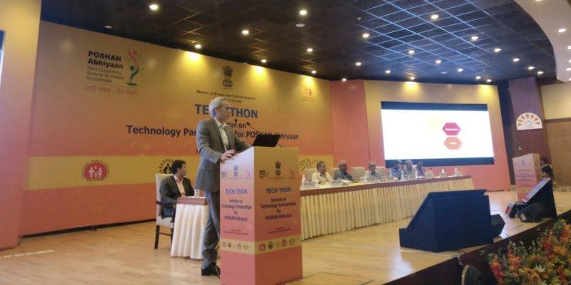
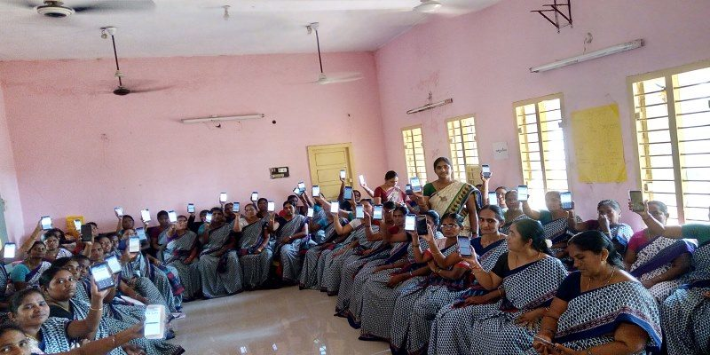
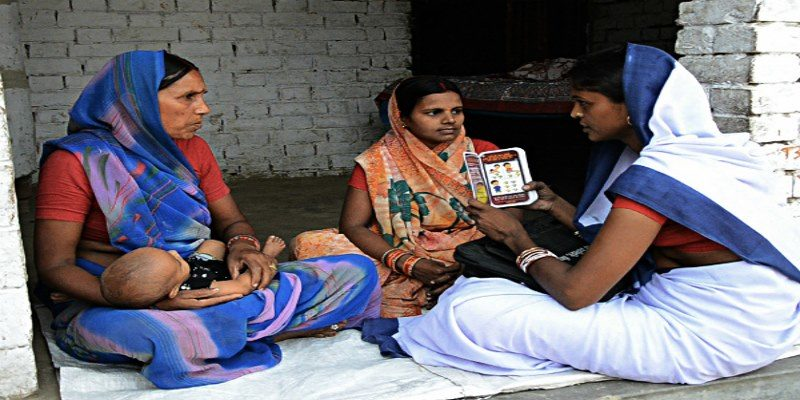

Dimagi CEO Jonathan Jackson addresses the TECH-THON attendees in June.
Following its launch in March 2018, the Prime Minister’s Overarching Scheme for Holistic Nutrition (POSHAN) Abhiyaan initiative, is now the largest e-nutrition and health program in the world, with 110,000 frontline workers reaching 9.5 million beneficiaries across seven states in India.
Led by the Indian Ministry of Women and Child Development, the initiative and its application, ICDS-CAS (Common Application Software), aims to improve nationwide nutrition outcomes through “effective monitoring, timely intervention and also as a fact-based decision-making tool.” With its ambitious goal to cover all 36 states and 718 districts in the country by 2020, the Ministry organized TECH-THON, a day-long Seminar on Technology Partnerships.
TECH-THON showcased the initiative and supported an exchange of ideas that allowed partners to explore avenues of cooperation and partnership for technology support. Ministers, top policymakers, and partners such as UNICEF, World Bank, World Health Organization (WHO), and Bill and Melinda Gates Foundation attended the seminar.

A group of Anganwadi Workers finishes its ICDS-CAS training session.
The POSHAN Abhiyaan mission is a targeted approach to address malnutrition, which continues to be a key concern for India. According to an announcement from the Secretary of Women and Child Development, Sh. Rakesh Srivastava, described the ICDS-CAS solution as the “backbone for implementation” of the initiative. The application empowers frontline health workers, known as Anganwadi workers, with a smartphone application that improves service delivery, while offering supervisors real-time decision support.
“[The platform] facilitates the capture of data by frontline functionaries and a six-tier dashboard ensures the monitoring and intervention mechanism… automating the entire process of Delivery-Monitoring-Intervention into a near real-time system,” said Sh. Srivastava.

An Anganwadi Worker administers the evaluating the health of a mother and her newborn.
Among the partners in attendance at TECH-THON was Dimagi’s CEO and Co-Founder, Jonathan Jackson, and Director of Government & Partnerships, Kanishka Katara. Dimagi was invited as a technology partner, as the ICDS-CAS application was built using Dimagi’s software platform, CommCare.
Jackson spoke as a panelist on the importance of inclusion and equity as technology continues to be adopted for global development initiatives. He addressed how introducing new technology solutions such as artificial intelligence and machine learning could help maximize the impact of the ICDS-CAS program. However, he also noted that investing in these solutions requires ongoing monitoring and resources to realize the benefits of the technology - resources that would trade off against service delivery and scaling a program like ICDS-CAS.
“Almost all uses of artificial intelligence and machine learning for this program or others requires significant human support,” Jackson said. “That type of investment competes against all the other investments. If you’re going to spend a million dollars introducing the next big data tool or AI tool, that’s a million dollars you aren’t using to scale out the program.”
Jackson contends that investing in these solutions in an impact-focused environment is difficult since there is not a clear return on investment.
“What is going to cause us to make the investments in artificial intelligence, machine learning, and other types of technologies that could have a huge impact on the ground when they are competing against these other things?” Jackson said.
Other speakers echoed these sentiments, including MWCD Secretary Sh. Srivastava, promoting consideration for those with disabilities and “reaching out to the beneficiaries for effective behavioural change to initiate a ‘Peoples Movement’ towards nutrition.”
You can watch Jackson’s address here (1:11:30 and 6:10:24):
Also notable in the recording are:
- Dr. Rajiv Kumar, Vice Chairman, NITI Aayog (00:10:35)
- Dr. Rajesh Kumar, Joint Secretary, MWCD (47:00)
- Dr Vinod K. Paul, Member, NITI Aayog (00:40:10)
- Mr. Rahul Mullick, Digital Lead, ICO - BMGF (00:59:00)
- Mr. Kanishka Katara, Director of Government & Partnerships, Dimagi (1:18:30)
With over 300 participants in attendance, the Seminar was widely regarded as a success. AIndia’s DD News covered the event and ICDS-CAS program. Watch here:
For more information on POSHAN Abhiyaan and ICDS-CAS, please visit the Ministry of Women and Child Development summary here. Notes from the TECH-THON seminar are also available here.